측량및지형공간정보기사 (2003-05-25 기출문제)
1과목: 측지학 및 위성측위시스템
1. 다음 설명 중 옳지 않는 것은?
- 천문측량에 의한 경ㆍ위도 측정은 관측점마다 독립적으로 이루어 진다.
- 지구상의 위치는 지리학적 경ㆍ위도 및 준거타원체상으로부터의 높이로 표시된다.
- 목적하는 측량의 정확도에 따라서 지구를 구로 생각할 수 있다.
- 지구상의 위치는 직각좌표나 극좌표 등으로 표시하기도 한다.
(정답률: 알수없음)

2. 측지원점(Geodetic Datum)을 설정하기 위해서는 타원체의 적도반경, 편평률, 그리고 타원체의 단축과 회전축이 평행하다는 세가지 조건외에 다른 조건이 더 필요하다. 이에 해당되지 않는 것은?
- 지오이드고
- 기준 방위각
- 수직선 편차
- 표준 중력
(정답률: 알수없음)
3. 지구자기의 변화에 해당되지 않는 것은?
- 부게(bouguer)이상
- 일변화
- 영년변화
- 자기폭풍
(정답률: 알수없음)
4. 지구 내부의 온도에 대한 설명 중 옳지 않은 것은?
- 지구 내부는 일반적으로 핵까지 깊이에 따라 지속적으로 온도가 상승한다.
- 지구 내부의 온도는 일반적으로 100km 까지 100m 깊이당 3℃씩 증가한다.
- 지구중심의 온도는 5,000℃ 내외인 것으로 추정한다.
- 지구내부의 온도상승을 온도경사라 한다.
(정답률: 62%)
5. 지구반경 R=6,400km 라 하고 거리의 허용오차가 1/1⑤ 이라면 반경 몇 km까지를 평면으로 볼 수 있는가?
- 35.⑤4km
- 70.108km
- 140.216km
- 210.324km
(정답률: 10%)
6. 인공위성을 이용한 범지구적 위치결정 시스템으로 NNSS과 교체되는 항행시스템은?
- SPOT
- LORAN
- GPS
- OMEGA
(정답률: 알수없음)
7. 다음 사항에서 측지학의 정의로 가장 알맞는 것은?
- 측지학은 지구의 형상, 크기, 중력장과 그 변화를 결정하는 학문이며, 크게 물리측지학과 기하측지학으로 나눈다.
- 기하측지학은 지구내부구조 및 특성을 연구하는 분야이다.
- 물리측지학은 지표면상의 모든 점간의 상호관계를 결정하는 학문이다.
- 측지학은 지구에 대한 측성만을 연구하는 학문이며, 측량은 일반측량에서 다룬다.
(정답률: 30%)
8. 중력은 관측점 사이의 고도차가 중력에 영향을 미칠 경우 보정을 해야 한다. 이 때 관측점 사이에 존재하는 물질의 인력에 의한 영향을 고려하는 보정을 무엇이라 하는가?
- 자유고도(free-air) 보정
- 위도 보정
- 부게(Bouguer) 보정
- 계기 보정
(정답률: 알수없음)
9. 지자기에 관한 다음 설명중 틀린 것은?
- 지자기의 장기적인 완만한 변화를 영년변화라 한다.
- 진북방향과 자북방향이 이루는 각을 복각이라 한다.
- 지자기의 편각은 영년변화를 한다.
- 지구의 자극은 미소하나마 이동하고 있다.
(정답률: 알수없음)
10. 해상위치결정에 대한 설명 중 맞지 않는 것은?
- 수심측량은 음향측심기로 가능하다.
- 독립한 2개 이상의 위치선의 조합으로 할 수 있다.
- 시간차 관측의 원리에서 위상 비교법의 분해능은 파장이 짧을수록 좋아진다.
- 위치선으로 분류하면 방위선방식, 원호방식, 타원방식으로 구분할 수 있다.
(정답률: 알수없음)
11. 메르카토르 투영에서 항정선은 어떤 형태인가?
- 직선
- 포물선
- 쌍곡선
- 동심원
(정답률: 82%)
12. 위성측량에서 인공위성의 운동은 케플러의 몇 번째 법칙에 의해 고도와 주기의 관계를 나타낼 수 있는가?
- 케플러 제1법칙
- 케플러 제2법칙
- 케플러 제3법칙
- 케플러 제4법칙
(정답률: 알수없음)
13. 측지선에 대한 설명으로 알맞은 것은?
- 지표상 2점간의 최장거리
- 지표상 2점간의 최단거리
- 일정한 각도로 유지하는 법선
- 일정한 각도로 유지하는 지표선
(정답률: 80%)
14. 다음에서 설명하는 내용 중 옳지 못한 것은?
- 우리가 실제측량을 할 때 평판수준기에 의해서 정준을 하면, 지오이드가 기준이 된다.
- 연직선 편차는 지구내부의 밀도의 불균형, 지표면의 기복 등에 의하여 생긴다.
- 지오이드면은 일반적으로 대륙에서는 회전타원체보다 낮다.
- 지오이드고는 기준타원체로부터 지오이드까지의 수직거리이다.
(정답률: 알수없음)
15. 어떤 관측지점과 지구의 양극을 지나는 대원을 무엇이라 하는가?
- 적위(Declination)
- 묘유선(Prime vertical)
- 적경(Right ascension)
- 자오선(Meridian)
(정답률: 알수없음)
16. 다음 설명 중 잘못된 것은?
- 섬광삼각법은 비행기에서 섬광체를 낙하산으로 투하시키고 이를 각 관측점에서 동시에 관측하는 것이다.
- 전자파 측거기와 컴퓨터의 발달로 삼각, 다각, 삼변 측량의 혼합측량이 가능하다.
- NNSS 위성 시스템에서는 WGS72 좌표계를 사용 한다.
- 고산지에서 중력을 측정하면 그 지점의 표고를 알 수 있다.
(정답률: 알수없음)
17. 다음은 항정선에 대한 설명이다. 틀린 것은?
- 자오선과 항상 일정한 각도를 유지하는 지표선이다.
- 방위각이 일정한 등방위선이다.
- 한점에서 출발한 항정선은 극으로 갈수록 나선모양으로 수렴한다.
- 항정선은 평행권과 일치하므로 등위도선이라고도 한다.
(정답률: 80%)
18. 평탄한 표고 700.0m인 지역에 설치한 기선의 측정치가 800.0m 이었다. 이 기선의 평균해면상 거리는 얼마인가? (단, 지구의 반지름은 6370.0km로 가정)
- 795.7m
- 799.9m
- 803.3m
- 8⑤.1m
(정답률: 알수없음)
19. 지자기의 3 요소가 아닌 것은?
- 연직분력
- 수평분력
- 편각
- 복각
(정답률: 60%)
20. 구면삼각형에 대한 내용으로 옳지 않은 것은?
- 구과량의 크기는 반경의 제곱에 반비례하고 면적에 비례한다.
- 1변이 30km 정도인 정삼각형에서 구과량은 약 20" 정도 발생한다.
- 변장 10km 이하의 계산에서는 구과량을 무시할 수 있으며 우리나라의 경우에는 1등 삼각망의 경우에만 적용한다.
- 구면삼각형과 평면삼각형과의 차는 삼각형의 내각의 합이 180° 를 넘는 양으로서 구과량이라 한다.
(정답률: 91%)
2과목: 응용측량
21. 경관측량에서 경관 구성요소에 의한 분류가 아닌 것은?
- 대상계
- 경관장계
- 시점계
- 시준계
(정답률: 알수없음)
22. 노선측량 작업에서 도상에 중심선을 설치하는 공정은 다음 중 어느 단계에 해당되는가?
- 조사측량
- 예비측량
- 공사측량
- 실시설계측량
(정답률: 알수없음)
23. 하천 측량의 작업을 분류하면 3가지를 들 수 있다. 다음 사항 중에서 해당되지 않는 것은 어느 것인가?
- 강우량측량
- 유량측량
- 수준측량
- 평면측량
(정답률: 알수없음)
24. 가로가 20m, 세로가 15m인 사각형의 면적계산에서 상대 오차를 1/1000이내로 하기 위해서 각 변장의 제한오차는 얼마인가? (단, 변장의 측정정밀도는 동일함)
- Δa = 10mm, Δb = 7.5mm
- Δa = 12mm, Δb = 7.5mm
- Δa = 10mm, Δb = 8.5mm
- Δa = 12mm, Δb = 8.5mm
(정답률: 알수없음)
25. 경관측량시 시설물의 1점을 시준할 때 시준선과 시설물 축선이 이루는 각(α )이 10° < α ≤ 30° 일 때 얻어지는 경관은?
- 특이한 시설물 경관을 얻고 시점이 높게 된다.
- 입체감 있는 계획이 잘된 경관을 얻는다.
- 입체감이 없는 평면적인 경관이 된다.
- 시설물 축선이 이루는 각과는 상관이 없다.
(정답률: 70%)
26. 곡선에서 현의 길이가 100m, 이 현의 길이에 대한 중심각을 θ, 반지름을 R이라 할 때, θ가 1° 인 곡선의 반지름은?
- 5,730m
- 5,440m
- 4,865m
- 4,500m
(정답률: 알수없음)
27. 그림과 같은 단면의 면적은 얼마인가?
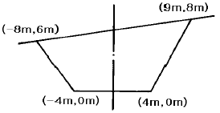
- 78m2
- 80m2
- 87m2
- 90m2
(정답률: 55%)
28. 고속도로에 일반적으로 많이 쓰이는 완화곡선은?
- 3차 포물선
- 렘니스케이트곡선
- 3차 나선
- 클로소이드곡선
(정답률: 알수없음)
29. 그림과 같은 토지분할에서 면적비 n:m가 1:1이 되려면 AD의 길이는 얼마인가? (단, a=27.2m, AB=52m, AC=46m)
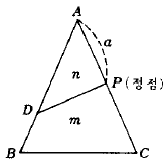
- 40.2m
- 42.3m
- 44.0m
- 46.7m
(정답률: 알수없음)
30. 제방, 교량, 배수 등 주로 치수(治水)목적에 이용되는 수위는 어느 것인가?
- 최대수위
- 평균수위
- 평균최고수위
- 최고수위
(정답률: 55%)
31. 클로소이드 곡선설치 방법에 있어서 중간점 설치방법이 아닌 것은?
- 1/8법에 의한 설치법
- 극각동경법에 의한 설치법
- 극각현장법에 의한 설치법
- 현에서 직교좌표에 의한 설치법
(정답률: 알수없음)
32. 다음 설명 중 옳지 않은 것은?
- 완화곡선의 곡선반경은 시점에서 무한대, 종점에서 원곡선 R로 된다.
- 완화곡선의 접선은 시점에서 원호에, 종점에서 직선에 접한다.
- 클로소이드의 형식에는 S형, 복합형, 기본형 등이 있다.
- 모든 클로소이드는 닮은 꼴이며 클로소이드의 요소에는 길이의 단위가 있는 것과 단위가 없는 것이 있다.
(정답률: 알수없음)
33. 다음과 같은 터널(Tunnel)측량에서 A, B 두점간의 고도차는 얼마인가? (단, I.H.= 2.45m, H.P.= 3.10m, A,B의 경사거리= 58.40m, 경사각 α= 5°30'이다.)
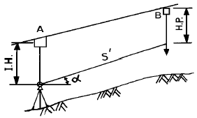
- 6.27 m
- 6.25 m
- 4.97 m
- 4.95 m
(정답률: 알수없음)
34. 노선 측량의 단곡선 설치에서 곡선의 반지름 R=600m, 교각 I=32° 15'일 때 이 곡선상에 설치할 해야 할 20m 간격의 말뚝 수는? (단, 시단현의 길이는 15m이다)
- 14개
- 15개
- 16개
- 17개
(정답률: 알수없음)
35. 노선 선정에서 지형상 접선장의 길이가 25m이고, 교각이 42° 20′ 일 때 반지름 R 은?
- 64.6m
- 64.8m
- 74.6m
- 74.8m
(정답률: 60%)
36. 하천의 유속측정에 있어서 수면에서부터 0.2, 0.6, 0.8의 깊이에서 지점의 유속이 0.562m/s, 0.497m/s, 0.364m/s 였다. 이때 평균유속은 다음 중 어느 것인가?
- 0.48m/s
- 0.45m/s
- 0.55m/s
- 0.65m/s
(정답률: 70%)
37. 직선구간의 도로설계를 위한 종횡단측량을 통하여 얻은 두 측점에서의 절토단면적 및 성토단면적이 주어진 표와 같다고 할 때 이 구간의 절토량과 성토량을 순서대로 맞게 열거한 것은?
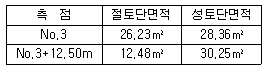
- 387.10m3, 586.10m3
- 586.10m3, 387.10m3
- 366.31m3, 241.94m3
- 241.94m3, 366.31m3
(정답률: 알수없음)
38. 하천의 수면구배를 정하기 위해 100m 의 간격으로 동시에 수위를 측정하여 다음 결과를 얻었다. 이 결과로부터 구한 이 구간의 평균 수면구배는?
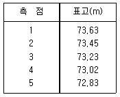
- 1/1,000
- 1/750
- 1/500
- 1/250
(정답률: 82%)
39. 강 건너에 있는 굴뚝의 높이를 알고자 다음과 같은 측량결과를 얻었다. ∠ABC=45°, ∠BAC=70°, ∠CBD=26°, =70m 이다. 굴뚝의 높이()는 얼마인가?
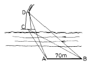
- 약 35m
- 약 33m
- 약 31m
- 약 29m
(정답률: 알수없음)
40. 파라미터(A) = 60.00의 클로소이드 곡선상에서 클로소이드 시점에서 곡선의 길이 40m인 점의 곡선 반지름은?
- 180.00m
- 90.00m
- 60.00m
- 30.00m
(정답률: 알수없음)
3과목: 사진측량 및 원격탐사
41. 평지를 축척 1/20,000로써 촬영한 연직사진이 있다. 이 사진을 C-계수가 1,800인 도화기로 도화할 수 있는 최소 등고선간격이 2m이었다면 기선고도비(基線高度比)는? (단, 화면의 크기는 23cm× 23cm, 횡중복도 30%, 종중복도 60%이다.)
- 0.51
- 0.89
- 1.00
- 1.66
(정답률: 19%)
42. 사진측량에서 모델(model)을 가장 잘 설명한 것은?
- 편위수정(偏位修正)한 사진이다.
- 한장의 사진이다.
- 어느 지역을 대표할 만한 사진이다.
- 한쌍의 중복된 사진으로 입체시되는 부분이다.
(정답률: 알수없음)
43. 항공사진 촬영작업조건 중 틀린 것은?
- 촬영 코스의 방향은 동서의 방향으로 하는 것을 원칙으로 한다.
- 동일 코스에 속하는 중복된 사진화면은 코스방향에 대하여 60%의 화면이 중복하는 것을 원칙으로 한다.
- 코스와 코스의 중복된 사진화면은 코스방향에 직각된 방향에 대하여 30%의 화면이 중복하는 것을 원칙으로 한다.
- 항공 수직사진을 촬영을 할 때 수평면에 대한 경사는 될수 있는대로 0° 에 가깝게하고 부득이한 경우에는 10° 이내에 있도록 노력한다.
(정답률: 알수없음)
44. 다음 중 해석적 항공삼각 측량법이 아닌 것은?
- 광속조정법
- 독립모형조정법
- 다항식조정법
- 멀티플렉스법
(정답률: 알수없음)
45. 사진상의 주점이나 표정점 등 제점의 위치를 인접한 사진상에 옮기는 작업을 무엇이라고 하는가?
- 선점
- 투영
- 점이사
- 도화
(정답률: 알수없음)
46. DTM(Digital Terrain Model)방식 중 사각형으로 지형점을 추출하는 방식으로 지형이 넓을 때 가장 많이 이용되는 것은?
- Contour line 방식
- Grid 방식
- Random point 방식
- Section 방식
(정답률: 64%)
47. 실제 길이가 90m 인 교량이 항공사진 상에 3mm 로 나타났다. 항공사진은 거의수직사진(near vertical photograph)이며 화면의 크기는 23cm× 23cm 이고 초점거리가 150mm인 광각카메라로써 찍힌 것이다. 이 사진 한장이 포괄하고 있는 토지의 면적은?
- 53.61km2
- 51.61km2
- 49.61km2
- 47.61km2
(정답률: 46%)
48. 다음 탐측기 중 수동적 탐측기(Passive Sensor)는?
- Laser Spectrometer
- M SS
- Radar
- SLAR
(정답률: 알수없음)
49. 초점거리 15cm인 광각사진기로 촬영고도 3,000m에서 180km/h의 운항속도로 항공사진을 촬영할 때 사진 노출점간의 최소소요시간은 얼마인가? (단, 사진기의 크기 23cm× 23cm이고, 종중복도는 60%이다.)
- 36.8초
- 40.6초
- 50.5초
- 60.3초
(정답률: 알수없음)
50. 색조(tone), 크기(size), 형태(shape), 음영(shadow), 질감(texture) 및 모형(pattern)에 의하여 사진을 정성(定性) 분석을 하는 작업은?
- 표정작업
- 사진지도 제작
- 사진판독
- 세부도화
(정답률: 알수없음)
51. 대공표지에 대한 설명 중 옳지 않은 것은?
- 대공표지의 상공은 45° 이상의 각도로 열어두어야 한다.
- 대공표지에 쓰이는 재료는 베니어판, 알루미늄, 돌, 천, 콜탈 등이 사용된다.
- 그 위치가 촬영 후에 확인되는 다른 점으로부터 쉽게 편심 관측되는 점은 생략 가능하다.
- 주위가 황색이나 흰 경우는 짙은 녹색이나 검정색, 녹색이나 검을 경우는 회백색의 광택색이어야 한다.
(정답률: 알수없음)
52. 사진의 중심점을 찾으려면 다음 어느 것을 이용하는가?
- 사진번호
- 화면거리
- 사진기의 초점거리
- 사진지표
(정답률: 알수없음)
53. 보통각 항공카메라의 사용목적으로 가장 적절한 것은?
- 삼림 조사용
- 소축척 도화용
- 특수 대축척 도화용
- 일반도화, 판독용
(정답률: 알수없음)
54. 다음 사진지도에 대한 설명 중 틀린 것은?
- 카메라의 경사, 지표면 축척을 일부만 조정하여 등고선이 삽입된 지도가 반조정집성 사진지도이다.
- 카메라의 경사, 지표면의 비고를 수정하고, 등고선이 삽입된 지도가 정사투영 사진지도이다.
- 카메라의 경사에 의한 변위, 지표면의 비고에 의한 변위를 수정하지 않고 접합한 것이 약집성 사진지도이다.
- 카메라의 경사에 의한 변위를 수정하고, 축척도 조정된 것이 조정집성 사진지도이다.
(정답률: 알수없음)
55. 항공사진의 특수 3점이 아닌 것은?
- 지상기준점
- 연직점
- 등각점
- 주점
(정답률: 알수없음)
56. 대지표정에 필요한 최소 기준점의 수는?
- 3점의 x,y좌표와 2점의 z좌표
- 2점의 x,y좌표와 1점의 z좌표
- 3점의 x,y,z좌표와 2점의 z좌표
- 2점의 x,y,z좌표와 1점의 z좌표
(정답률: 알수없음)
57. 입체상의 변화를 설명한 것 중 옳지 않은 것은?
- 촬영기선이 긴 경우가 촬영기선이 짧은 경우보다 더 낮게 보인다.
- 렌즈 초점거리가 긴 경우의 사진이 짧은 경우의 사진보다 더 낮게 보인다.
- 눈의 위치가 약간 높아짐에 따라 입체상은 더 높게 보인다.
- 낮은 촬영고도로 촬영한 사진이 촬영고도가 높은 경우보다 더 높게 보인다.
(정답률: 알수없음)
58. 기계적 상호표정시 왼쪽사진인자(k1, φ1, ω1, by1, bz1)만을 사용하고자 한다. 이 때 인자의 사용 순서로 맞는 것은?
- k1⇒ by1⇒ φ1⇒ bz1⇒ ω1
- by1⇒ k1⇒ bz1⇒ φ1⇒ ω1
- k1⇒ φ1⇒ by1⇒ bz1⇒ ω1
- bz1⇒ φ1⇒ by1⇒ k1⇒ ω1
(정답률: 55%)
59. 축척 1/10,000로 평지를 촬영한 연직사진이 있다. 이 화면의 크기는 23cm×23cm, 종중복도는 60%라 하면 촬영기선길이는 얼마인가?
- 820m
- 920m
- 1,020m
- 1,120m
(정답률: 알수없음)
60. 항공사진측량에서 스트립(Strip)의 설명 중 틀린 것은?
- 촬영진행 방향으로 연속된 모델
- 비행코오스와도 같은 의미로 쓰임
- 스트립의 횡방향으로 이루어진 것이 블록(block)
- 비행코오스나 블록과는 무관한 사진들의 집합
(정답률: 73%)
4과목: 지리정보시스템
61. 거리를 측정할 때에 발생하는 오차 중에서 정오차가 아닌 것은?
- 온도의 변화에 의한 오차
- 눈금을 잘못 읽었을 때, 발생하는 오차
- 테이프의 눈금이 잘못되어 발생하는 오차
- 테이프의 처짐(sag)으로 발생하는 오차
(정답률: 알수없음)
62. 삼각점 A에 기계를 설치하여 삼각점 B를 시준하여 각 T를 관측하고자 하였으나 장애물로 인해 B로부터 e만큼 떨어진 위치의 점 P를 관측하여 T '=60° 30′ 를 얻었다. 보정한 각T 를 구하시오. (단, S=2km, e=5m, φ =310° 20′ )
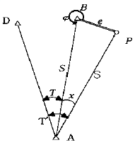
- 60° 26′ 27˝
- 60° 23′ 27″
- 61° 26′ 27″
- 61° 23′ 27″
(정답률: 알수없음)
63. 지표면에서 강철테이프를 사용하여 거리를 측정할 때의 보정사항이다. 이 중에서 항상 음(-)의 보정량을 갖는 것은 어느 것인가?
- 표준척 보정
- 온도 보정
- 장력 보정
- 평균해수면 보정
(정답률: 알수없음)
64. 스타디아 측량에서 높이(H)를 구하는 공식은? (단, K, C:스타디아 정수, ℓ :협장)
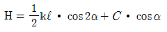
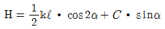
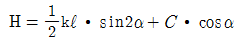
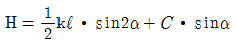
(정답률: 알수없음)
65. 평지에서 8km 떨어진 두 삼각점 사이를 관측하기 위하여 세워야 되는 측표의 최소높이는? (단, 지구의 반경 = 6,370km)
- 2m
- 5m
- 7m
- 9m
(정답률: 알수없음)
66. 주로 지역내의 지성선 위치 및 그 위의 각점 표고를 실측 도시하여 이것을 기초로 현지에서 지형을 관찰하면서 적당하게 등고선을 삽입하는 방법으로 비교적 소축척 산지에 이용되는 방법은?
- 횡단점법
- 기준점법
- 좌표점법
- 종단점법
(정답률: 42%)
67. 삼각측량에 있어서 삼각점의 수평위치는 무엇으로 정하는가?
- 거리와 방향각
- 고저차와 방향각
- 밀도와 폐비
- 폐합오차와 밀도
(정답률: 알수없음)
68. 그림과 같이 수평거리 50m, 앨리데이드 경사 분획이 +7, 측표의 높이 3m, 기계높이 1.5m일 때 B점의 표고는? (단, A점의 표고는 100m이다.)
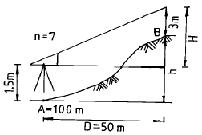
- 102.0m
- 103.0m
- 101.5m
- 102.5m
(정답률: 알수없음)
69. 다음 중 지형 자료에 대한 공간분석 방법의 연결로 옳은 것은?
- 점(占) ― 최근린 방법, 쿼드랫 방법
- 선(線) ― 형상관측, 공간적 상호작용
- 면(面) ― 쿼드랫 방법, 공간적 자동상관관계
- 선(線) ― 최근린 방법, 망분석과 도표이론 방법
(정답률: 알수없음)
70. 직육면체인 저수탱크의 용적을 구하고자 한다. 밑변 a, b와 높이 h에 대한 측정결과가 다음와 같을 때 용적오차는 얼마인가?
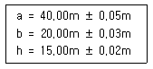
- ± 7m3
- ± 21m3
- ± 28m3
- ± 49m3
(정답률: 알수없음)
71. 다음중 수치영상개선(enhancement)방법이 아닌 것은?
- 영상연화(image smoothing)
- 영상첨예화(image sharpening)
- 영상합성(image composite)
- 의사색을 이용한 영상처리(pseudo-color image processing)
(정답률: 37%)
72. 노선측량에 있어서 곡선 반경 700m 되는 원곡선 상을 90㎞/h 로 주행하려면 칸트(cant)는 얼마인가? (단, 궤간(b)는 1.472m 임)
- 14.4㎜
- 73.4㎜
- 114㎜
- 134㎜
(정답률: 알수없음)
73. 지형공간정보체계의 자료처리 흐름에서 자료처리 과정에 포함되지 않는 것은?
- 부호화
- 모형화
- 중첩, 분해
- 통계해석
(정답률: 30%)
74. 항공사진에 관한 표정(Orientation)의 종류가 아닌 것은?
- 절대표정(absolute orientation)
- 상호표정(relative orientation)
- 내부표정(inner orientation)
- 정밀표정(accuracy orientation)
(정답률: 알수없음)
75. 다음 등고선의 성질 중 옳지 않은 것은?
- 등고선은 분기하지 않고 절벽 이외에는 교차하지 않는다.
- 동일 등고선 상의 모든 점은 기준면상 같은 높이에 있다.
- 등고선은 하천, 호수, 계곡 등에서는 단절되고 도상에서 폐합하는 일이 없다.
- 등고선은 최대 경사선에 직각이 되고 부수선 및 계곡선에 직교한다.
(정답률: 알수없음)
76. 평지에서 A점에 평판을 세우고 B점의 표척(상하간격 3m)을 보통 앨리데이드로 시준하여 상 6.5, 하 2.5의 눈금을 읽었다. A, B 사이의 거리는 얼마인가?
- 6.5 m
- 7.5 m
- 65 m
- 75 m
(정답률: 알수없음)
77. 다음 중 UTM 좌표계에 관하여 잘못 설명한 것은?
- 각 종대는 180° W 자오선에서 서쪽으로 6° 씩 간격으로 1부터 60까지 번호를 붙인다.
- 위도는 남· 북위 80° 까지만 포함한다.
- UTM은 적도를 횡축, 자오선을 종축으로 한다.
- 위도는 8° 간격으로 나누어 알파벳 문자로 표시한다.
(정답률: 알수없음)
78. 축척 1:5,000 국가기본도상에서 그림과 같이 주곡선상의 두점 A,B 사이의 도상거리가 2cm인 경우 이 두점사이의 실제경사는?
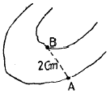
- 1%
- 5%
- 10%
- 25%
(정답률: 70%)
79. 다음 기고식 야장에서 측점 4의 지반고는 얼마인가?
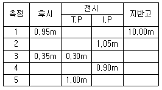
- 9.90m
- 10.00m
- 10.10m
- 10.65m
(정답률: 82%)
80. 평판측량에서 축척 1/1,000의 도면을 작성할 때 도상의 점위치의 허용오차를 0.2㎜라 하면 측점의 구심오차 허용 한계는?
- 8㎝
- 10㎝
- 12㎝
- 14㎝
(정답률: 알수없음)
5과목: 측량학
81. 기본측량을 위해 타인의 토지 또는 건물의 출입 및 일시 사용에 대한 공무원의 행위중 잘못된 것은?
- 기본측량에 종사하는 공무원은 측량을 실시하기 위하여 필요한 때에는 타인의 토지나 건물에 출입할 수 있다.
- 점유자를 알수 없을 때에는 사전통지 없이 타인의 건물에 출입할수 있다.
- 필요하다고 인정되는 경우에는 토지, 건물, 기타공 작물을 공익사업을위한토지등의취득및보상에관한법률에 관계 없이 수용하거나 사용할 수 있다.
- 소유자 또는 점유자를 알수 없을 때에는 사전통지 없이 임시설치표지를 설치할 수 있다.
(정답률: 50%)
82. 지물의 변동등으로 인하여 기본측량의 측량성과가 현장과 다르게 되었을 경우 이를 수정할 수 있는 자는?
- 국립지리원장
- 건설교통부장관
- 측량심의회
- 대한측량협회
(정답률: 알수없음)
83. 측량업의 등록취소 처분후 측량업자의 용역수행에 관한 사항으로 틀린 것은?
- 그 처분전에 체결한 도급계약에 의한 측량용역을 계속 수행할 수 있다.
- 측량업자는 그 처분의 내용을 지체없이 측량용역의 발주자에게 통지하여야 한다.
- 그 처분후에도 규정에 의해 측량용역을 계속하는 자는 당해 측량용역을 완료할 때까지 측량업자로 본다.
- 측량용역의 발주자는 그 처분을 안 날로부터 30일이내에 한하여 도급계약을 해지할 수 없다.
(정답률: 알수없음)
84. 측량업등록의 결격사유에 해당되지 않는 것은?
- 국가보안법의 죄를 범하여 금고이상의 형의 집행유예 선고를 받고 그 집행유예기간중에 있는 자
- 파산선고를 받고 복권되지 아니한 자
- 측량업의 등록이 취소된 후 3년이 경과되지 아니한 자
- 임원중에 금치산자가 있는 법인
(정답률: 50%)
85. 다음 중 공공측량으로 지정할 수 있는 일반측량이 아닌 것은?
- 측량실시 지역의 면적이 1000m2이상인 삼각측량, 지형측량 및 평면측량
- 측량 노선길이가 10km이상인 수준측량
- 국립지리원장이 발행하는 축척과 동일한 축척의 지도제작
- 촬영지역의 면적이 1km2이상인 측량용 사진의 촬영
(정답률: 40%)
86. 수치주제도의 보완은 몇 년마다 1회이상 실시하여야 하는가?
- 1년
- 2년
- 3년
- 4년
(정답률: 알수없음)
87. 측량법에 의한 측량업을 등록한 자가 그 사업을 양도하거나 사망 또는 합병에 따른 승계사유가 발생되었을 경우 몇 일이내에 건설교통부장관에게 신고하여야 하는가?
- 7일 이내
- 10일 이내
- 15일 이내
- 30일 이내
(정답률: 알수없음)
88. 공공측량(公共測量)의 실시에 기초가 되는 것은?
- 기본측량 또는 다른 공공측량의 성과
- 기본측량 또는 지적측량의 성과
- 지적측량의 성과
- 삼각점과 수준점 사용
(정답률: 70%)
89. 기본측량과 공공측량을 실시할 경우 측량기준에 관한 내용 중 틀린 것은?
- 위치는 지리학적 경위도와 평균해면으로부터의 높이로 표시한다.
- 거리와 면적은 회전타원체면상의 값으로 표시한다.
- 지리학적 경위도는 세계측지계에 따라 측정한다.
- 세계측지계 및 측량의 원점 등에 관한 사항은 건설교통부령으로 정한다.
(정답률: 75%)
90. 공공측량에 관한 작업규정의 작성권자는?
- 건설교통부장관
- 공공측량의 계획기관
- 국립지리원장
- 공공측량의 작업기관
(정답률: 60%)
91. 다음 중 측량협회 임원(회장, 부회장, 이사 및 감사)의 임기를 규정하는 것은?
- 측량법
- 측량법 시행령
- 측량법 시행규칙
- 협회의 정관으로 별도 정함
(정답률: 알수없음)
92. 측량기기의 검사에 관한 사항으로 틀린 것은?
- 성능검사의 방법· 절차 기타 성능검사에 관하여 필요한 세부사항은 건설교통부령으로 정한다.
- 성능검사는 외관검사, 구조· 기능검사 및 측정검사로 구분하여 행한다.
- 성능검사를 받지 아니한 측량기기를 사용하여 측량을 하여서는 아니된다.
- 성능검사의 신청을 하고자 하는자는 성능검사를 받아야 하는 당해 측량기기를 제시하여야 한다.
(정답률: 알수없음)
93. 측량심의회의 심의사항중 틀린 것은?
- 측량기술의 연구발전에 관한 사항
- 측량도서의 발간
- 공공측량의 계획,실시에 관한 사항
- 공공측량 및 일반측량에서 제외되는 측량의 범위
(정답률: 알수없음)
94. 측량법의 용어 중 발주자의 정의(定義)로 옳은 것은?
- 규정에 의하여 측량업을 등록한 자
- 기본측량, 공공측량의 용역을 도급 받는 자
- 측량용역을 측량업자에게 도급 받는 자
- 측량용역을 측량업자에게 도급 주는 자
(정답률: 알수없음)
95. 측량업자의 벌칙 중 1년 이하의 징역 또는 300만원 이하의 벌금에 처할 수 있는 내용은?
- 정당한 사유없이 측량의 실시를 방해한 자
- 측량업자에게 고용된 측량기술자가 다른 사업체에 종사할 때
- 무단으로 측량성과를 복제한 자
- 측량업자의 신고의무를 허위로 신고한 자
(정답률: 알수없음)
96. 건설교통부장관이 실시하여야 할 새로운 측량기술의 연구개발 및 도입 등에 필요한 시책이 아닌 것은?
- 정밀측량기기의 개발
- 측량품셈의 개선,보완
- 지도제작기술의 개발 및 자동화
- 수치지형정보의 표준화
(정답률: 알수없음)
97. 다음 중 기본측량의 측량성과 고시 사항에 해당되지 않는 것은?
- 측량의 종류
- 측량실시의 시기 및 지역
- 측량을 실시한 기술자 명단
- 측량성과의 보관장소
(정답률: 70%)
98. 손실 보상에 대한 관할토지 수용위원회의 재결에 대하여 불복이 있는자는 재결서 정본의 송달을 받은날로부터 몇개월 이내에 중앙토지 수용위원회에 이의를 신청할 수 있는가?
- 1개월
- 2개월
- 3개월
- 6개월
(정답률: 알수없음)
99. 지도의 외도곽에 표시하는 사항이 아닌 것은?
- 도엽명칭
- 도엽번호
- 발행자
- 제도사 성명
(정답률: 64%)
100. 기본측량을 위하여 설치한 측량표의 관리자는?
- 건설교통부장관
- 국립지리원장
- 시장, 군수
- 도지사
(정답률: 알수없음)
지구는 지심을 중심으로 한 불규칙한 형태를 가진 지구체이기 때문에, 측량의 정확도에 따라 구로 생각할 수 있다는 것은 부정확한 설명입니다. 따라서, 지구상의 위치는 지리학적 경ㆍ위도 및 준거타원체상으로부터의 높이로 표시됩니다. 이는 지구의 형태를 고려하여 정확한 위치를 표시하기 위한 방법입니다.